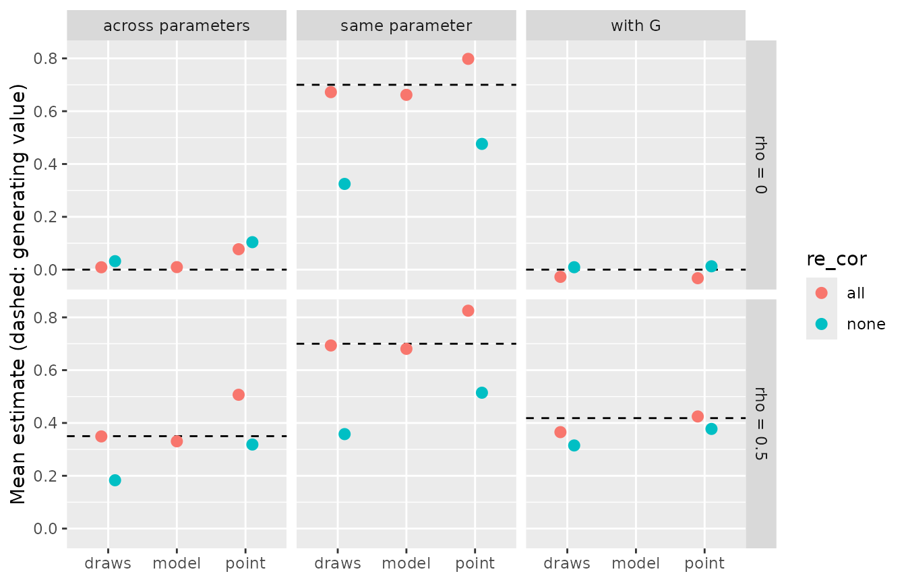
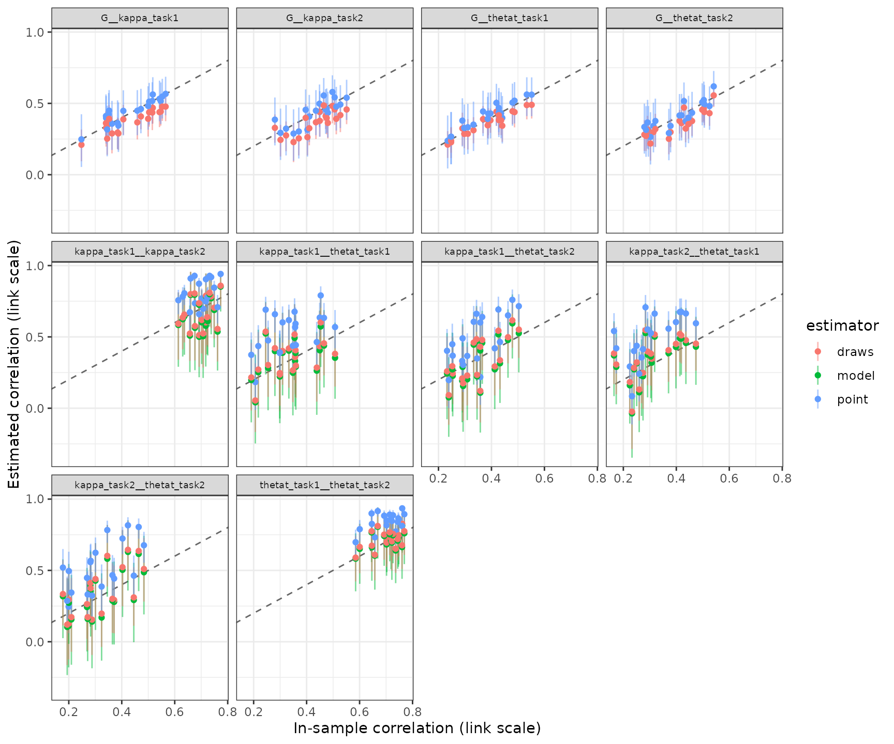

Recovering between-subject correlations
Source:vignettes/articles/correlation-recovery.Rmd
correlation-recovery.RmdA model that measures individual differences has to do more than order people correctly on each of its parameters. Most substantive questions are about how those differences relate: whether precision in one task goes with precision in another, whether two parameters of the same model are separable, or whether a parameter correlates with an ability measured outside the model. Validating a new bmm model scored how well subject estimates recover the subjects’ true values. This article scores how well the correlations between them are recovered.
A first look, not a benchmark. The results below come from one small simulation: four conditions, 20 replications each, 100 subjects per data set, fitted with four chains of 1,000 iterations, half of them warmup. At that length many fits miss the usual convergence standard, and we score them under a looser one (see Convergence). The results show how the tools work and in which direction each estimator errs. They are not a calibrated recommendation for study design. A more comprehensive simulation will replace this article once the package is stable.
To run the code you need bmm, brms, a working cmdstanr installation and, for the SEM part, lavaan. The output was computed once and saved, so this page was built without Stan or lavaan. Simulating and fitting the grid took 265 minutes.
Generating correlated people
library(bmmtools)
model <- bmm::mixture2p(resp_error = "y")
pars <- c(kappa = log(8), thetat = qlogis(0.75))
sds <- c(kappa = 0.3, thetat = 0.5)The model is bmm’s two-parameter mixture model, with population
values and between-subject SDs on the link scale as in Validating a new bmm model. Each simulated
subject does two tasks with 100 trials each, so there are four
subject-level terms, kappa and thetat in task
1 and task 2, and one observed covariate G, standing in for
an ability measured by a separate test.
The correlations among these five variables come from a factor model:
loadings <- matrix(
c(
sqrt(0.7), sqrt(0.7), 0, 0, 0,
0, 0, sqrt(0.7), sqrt(0.7), 0,
0, 0, 0, 0, 1
),
ncol = 3,
dimnames = list(
c("kappa_task1", "kappa_task2", "thetat_task1", "thetat_task2", "G"),
c("precision", "memory", "ability")
)
)
factor_cors <- function(rho) {
phi <- matrix(rho, 3, 3, dimnames = rep(list(colnames(loadings)), 2))
diag(phi) <- 1
phi
}
cors_for <- function(row) cors_from_factors(loadings, factor_cors(row$rho))
round(cors_for(data.frame(rho = 0.5)), 2)
#> kappa_task1 kappa_task2 thetat_task1 thetat_task2 G
#> kappa_task1 1.00 0.70 0.35 0.35 0.42
#> kappa_task2 0.70 1.00 0.35 0.35 0.42
#> thetat_task1 0.35 0.35 1.00 0.70 0.42
#> thetat_task2 0.35 0.35 0.70 1.00 0.42
#> G 0.42 0.42 0.42 0.42 1.00cors_from_factors() turns loadings and factor
correlations into the implied correlation matrix. The two tasks load
\(\sqrt{.7}\) on a factor per
parameter, precision for kappa and
memory for thetat, and G loads 1
on its own factor ability. All three factors correlate
\(\rho\). This gives three kinds of
pairs with known values:
- the same parameter across tasks, \(.7\) at every \(\rho\);
- different parameters, \(.7\rho\), so \(.35\) at \(\rho = .5\);
-
a parameter with
G, \(\sqrt{.7}\,\rho\), so \(.42\) at \(\rho = .5\).
We used a factor model, rather than one correlation for every pair, for two reasons. First, the article can then separate the correlation between two terms, which the estimators below score, from the correlation between the latent factors, which a structural equation model recovers. Second, the factor model keeps that SEM identified even at \(\rho = 0\), because the two tasks of one parameter still correlate \(.7\).
Three estimators
extract_correlations() offers three answers to the
question of how two subject-level terms correlate:
-
"model"is the correlation of the random effects the model estimates. It exists only when the random effects of the two terms share a correlation block,(1 | p | id). -
"draws"correlates the subjects’ values within each posterior draw and summarises these correlations like any other posterior, with the median and a 95% equal-tailed credible interval (CrI). -
"point"correlates the subjects’ posterior means, with a Fisher-z interval that treats the means as if they were observed values.
They target different quantities. model estimates the
correlation in the population the subjects come from. draws
describes the subjects in the data set: its interval reflects
uncertainty about their values, not about which subjects happened to be
sampled. point is a correlation of estimates, and so it
inherits whatever shrinkage and estimation error those estimates carry.
recover_correlations() therefore scores each estimate
against two truths: true_value, the generating correlation,
and sample_value, the correlation the simulated subjects
actually had.
The grid
grid <- expand.grid(
rho = c(0, 0.5),
re_cor = c("none", "all"),
stringsAsFactors = FALSE
)
grid$n_subjects <- 100
grid$n_trials <- 100
gridThe grid crosses the factor correlation, \(\rho = 0\) or \(.5\), with the random-effects structure of
the fitted model. Under re_cor = "none" every term has its
own random intercept and the model assumes the terms are uncorrelated.
Under re_cor = "all" the four terms share one correlation
block, so the model estimates their correlations.
out <- recovery_grid(
model, grid, pars,
dir = file.path(fits_dir, "correlation-recovery"),
reps = 20,
sds = sds, cors = cors_for,
covariates = list(G = c(mean = 0, sd = 1)),
tasks = c("1", "2"),
formula = function(row) {
recovery_formula(model, re_cor = row$re_cor, task_col = "task")
},
correlations = c("model", "draws", "point"),
seed = 2026,
chains = 4, iter = 1000, cores = 4, threads = brms::threading(3),
backend = "cmdstanr", refresh = 0, silent = 2
)cors and formula are functions of the grid
row. cors_for() builds the correlation matrix for the row’s
\(\rho\), and the formula function
reads the row’s re_cor, which is how one grid compares two
model specifications. tasks and covariates add
the task dimension and G to the simulated data.
correlations asks the grid to extract all three estimators
from every fit; model rows exist only in the
re_cor = "all" cells. threads enables
within-chain parallelisation in brms; in a timing test with one
100-subject fit it cut the sampling time from 499 to 238 seconds.
Convergence
# The grid's own verdict uses check_convergence()'s defaults. At iter 1000
# many fits miss the usual bar (Rhat < 1.01, ESS > 400), mostly on the
# cor_ terms and a few of the 400 subject effects. The article scores the
# fits that pass the looser bar below and reports both verdicts.
bar <- list(rhat_max = 1.05, ess_bulk_min = 150, ess_tail_min = 150,
divergent_max = 0)
strict_bar <- list(rhat_max = 1.01, ess_bulk_min = 400, ess_tail_min = 400,
divergent_max = 0)
convergence <- dplyr::bind_rows(lapply(seq_len(nrow(cells)), function(i) {
fit <- readRDS(cells$file[[i]])
verdict <- rlang::exec(check_convergence, fit, !!!bar)
strict <- rlang::exec(check_convergence, fit, !!!strict_bar)
tibble::tibble(
condition = cells$condition[[i]],
replication = cells$replication[[i]],
verdict,
pass_strict = strict$pass
)
}))
kept <- convergence[convergence$pass, c("condition", "replication")]
dplyr::summarise(
convergence,
fits = dplyr::n(), pass = sum(pass), pass_strict = sum(pass_strict),
.by = condition
)#> # A tibble: 4 × 10
#> condition rho re_cor fits pass pass_strict max_rhat min_ess_bulk min_ess_tail
#> <chr> <dbl> <chr> <int> <int> <int> <dbl> <dbl> <dbl>
#> 1 row-1 0 none 20 20 4 1.02 357. 626.
#> 2 row-2 0.5 none 20 20 2 1.02 338. 648.
#> 3 row-3 0 all 20 20 2 1.03 173. 333.
#> 4 row-4 0.5 all 20 20 4 1.02 244. 466.
#> # ℹ 1 more variable: n_divergent <int>Under the usual standard, Rhat below 1.01, bulk and tail ESS above 400 and no divergent transitions, only 12 of the 80 fits pass. None had a divergent transition or hit the maximum tree depth; they fall short on Rhat and ESS, and not by much. The worst Rhat is 1.03, the smallest bulk ESS 173 and the smallest tail ESS 333. We therefore score every fit with Rhat below 1.05 and bulk and tail ESS above 150, which all 80 fits meet.
The shortfall is concentrated in a few variables:
# Where the fits miss the strict bar: per fit and group of variables, how
# many variables do.
variable_group <- function(variable) {
dplyr::case_when(
startsWith(variable, "b_") ~ "population",
startsWith(variable, "sd_") ~ "sd",
startsWith(variable, "cor_") ~ "cor",
startsWith(variable, "r_") ~ "subject"
)
}
convergence_groups <- dplyr::bind_rows(lapply(
seq_len(nrow(cells)), function(i) {
draws <- posterior::subset_draws(
posterior::as_draws_df(readRDS(cells$file[[i]])),
variable = "^(b|sd|cor|r)_", regex = TRUE
)
diag <- posterior::summarise_draws(draws, "rhat", "ess_bulk", "ess_tail")
# a variable that is constant across draws has no rhat
diag <- diag[!is.na(diag$rhat), ]
diag$group <- variable_group(diag$variable)
dplyr::summarise(
diag,
condition = cells$condition[[i]],
replication = cells$replication[[i]],
n_variables = dplyr::n(),
n_rhat = sum(rhat >= strict_bar$rhat_max),
n_ess = sum(ess_bulk <= strict_bar$ess_bulk_min |
ess_tail <= strict_bar$ess_tail_min),
max_rhat = max(rhat),
min_ess_bulk = min(ess_bulk),
.by = group
)
}
))
dplyr::summarise(
convergence_groups,
fits_rhat = sum(n_rhat > 0), fits_ess = sum(n_ess > 0),
max_rhat = max(max_rhat), min_ess_bulk = min(min_ess_bulk),
.by = c(condition, group)
)#> # A tibble: 7 × 7
#> re_cor group fits fits_rhat fits_ess max_rhat min_ess_bulk
#> <chr> <chr> <int> <int> <int> <dbl> <dbl>
#> 1 none population 40 6 1 1.02 398.
#> 2 none sd 40 8 0 1.02 465.
#> 3 none subject 40 26 0 1.01 1062.
#> 4 all population 40 1 0 1.01 485.
#> 5 all sd 40 0 0 1.01 551.
#> 6 all cor 40 20 19 1.03 173.
#> 7 all subject 40 13 0 1.01 416.In the re_cor = "all" cells, 20 of 40 fits have a
correlation parameter with Rhat of 1.01 or above, and 19 have one with
ESS at or below 400. The smallest bulk ESS of any correlation parameter
is 173. These are the draws the model estimator summarises,
so its intervals below rest on fewer effective draws than the other
estimators’. In the re_cor = "none" cells, 26 of 40 fits
have at least one of their 400 subject-level terms with Rhat of 1.01 or
above, 8 an SD and 6 a population parameter. Longer chains are the
obvious remedy. For a simulation meant to show the direction of errors
rather than exact calibration, we did not run them.
Scoring
design <- data.frame(condition = sprintf("row-%d", seq_len(nrow(grid))), grid)
cors_all <- attr(out, "correlations")
cors <- dplyr::semi_join(cors_all, kept, by = c("condition", "replication"))
cor_summary <- dplyr::left_join(summary(cors), design, by = "condition")
cor_summarysummary() of the correlation recovery has one row per
condition, pair and estimator. With ten pairs, three estimators and four
conditions this is a long table, so we average it within the three kinds
of pairs:
pair_type <- function(term) {
dplyr::case_when(
grepl("(^|__)G(__|$)", term) ~ "with G",
grepl("^kappa.*__kappa|^thetat.*__thetat", term) ~ "same parameter",
TRUE ~ "across parameters"
)
}
by_type <- res$cor_summary |>
dplyr::mutate(pair_type = pair_type(term)) |>
dplyr::summarise(
true_value = mean(true_value),
mean_estimate = mean(mean_estimate),
bias = mean(bias),
coverage = mean(coverage),
coverage_sample = mean(coverage_sample),
rejection_rate = mean(rejection_rate),
ci_width = mean(ci_width),
.by = c(pair_type, rho, re_cor, estimator)
)
print(by_type, n = Inf)
#> # A tibble: 28 × 11
#> pair_type rho re_cor estimator true_value mean_estimate bias coverage
#> <chr> <dbl> <chr> <chr> <dbl> <dbl> <dbl> <dbl>
#> 1 same parameter 0 none draws 0.7 0.325 -0.375 0
#> 2 across parameters 0 none draws 0 0.0321 0.0321 0.988
#> 3 with G 0 none draws 0 0.00916 0.00916 0.762
#> 4 same parameter 0 none point 0.7 0.476 -0.224 0.1
#> 5 across parameters 0 none point 0 0.104 0.104 0.888
#> 6 with G 0 none point 0 0.0127 0.0127 0.962
#> 7 same parameter 0.5 none draws 0.7 0.358 -0.342 0
#> 8 across parameters 0.5 none draws 0.35 0.183 -0.167 0.363
#> 9 with G 0.5 none draws 0.418 0.315 -0.104 0.475
#> 10 same parameter 0.5 none point 0.7 0.515 -0.185 0.175
#> 11 across parameters 0.5 none point 0.35 0.318 -0.0316 0.925
#> 12 with G 0.5 none point 0.418 0.377 -0.0409 0.888
#> 13 same parameter 0 all model 0.7 0.662 -0.0381 0.975
#> 14 across parameters 0 all model 0 0.00953 0.00953 0.975
#> 15 same parameter 0 all draws 0.7 0.672 -0.0278 0.925
#> 16 across parameters 0 all draws 0 0.00894 0.00894 0.925
#> 17 with G 0 all draws 0 -0.0274 -0.0274 0.75
#> 18 same parameter 0 all point 0.7 0.798 0.0983 0.4
#> 19 across parameters 0 all point 0 0.0773 0.0773 0.75
#> 20 with G 0 all point 0 -0.0324 -0.0324 0.962
#> 21 same parameter 0.5 all model 0.7 0.681 -0.0193 1
#> 22 across parameters 0.5 all model 0.35 0.330 -0.0195 0.962
#> 23 same parameter 0.5 all draws 0.7 0.693 -0.00655 0.975
#> 24 across parameters 0.5 all draws 0.35 0.349 -0.000929 0.85
#> 25 with G 0.5 all draws 0.418 0.365 -0.0530 0.675
#> 26 same parameter 0.5 all point 0.7 0.825 0.125 0.35
#> 27 across parameters 0.5 all point 0.35 0.507 0.157 0.488
#> 28 with G 0.5 all point 0.418 0.425 0.00628 0.962
#> # ℹ 3 more variables: coverage_sample <dbl>, rejection_rate <dbl>, ci_width <dbl>rejection_rate is the share of replications whose
interval excludes zero: the false-positive rate where the true
correlation is 0 and the power where it is not. Recovery summary columns defines the other
columns.
library(ggplot2)
ggplot(
by_type,
aes(estimator, mean_estimate, colour = re_cor)
) +
geom_hline(aes(yintercept = true_value), linetype = "dashed") +
geom_point(size = 2.5, position = position_dodge(width = 0.4)) +
facet_grid(paste("rho =", rho) ~ pair_type) +
labs(
x = NULL, y = "Mean estimate (dashed: generating value)",
colour = "re_cor"
)
The same parameter across tasks. The generating
correlation is .70. A model without correlated random effects shrinks
each subject towards the mean of that term alone, and both estimators
are attenuated: draws gives .36 and point .51
at \(\rho = .5\). With correlated
random effects, model and draws recover the
correlation, at .68 and .69. point now overshoots, at .83,
and because its interval is narrow (mean width .13) it covers the
generating value in only .35 of the replications. A likely reason is
that the correlated model shrinks each subject towards the correlation
it estimates, so the posterior means line up more closely than the true
values do.
Different parameters. At \(\rho = 0\) this pair type measures false
positives. Under re_cor = "all", point
excludes zero in .25 of the replications, against .07 for
draws and .02 for model. At \(\rho = .5\) (generating value .35) the same
pattern holds: draws and model are close, .35
and .33, and point is inflated to .51. Under
re_cor = "none", draws is attenuated to .18,
while point lands near the truth at .32. However, the same
point estimator gives .10 where the truth is 0, so this is
not an unbiased estimator but, in this design, an attenuation and an
upward bias that partly cancel.
A parameter with G. Here
point is the best calibrated estimator. At \(\rho = 0\) it excludes zero in .04 of the
replications under re_cor = "all", and at \(\rho = .5\) its mean is .42 against a
generating value of .42, covered in .96 of the replications.
draws excludes zero in .25 of the replications at \(\rho = 0\). This follows from its target:
its interval covers the correlation these 100 subjects actually had in
.97 of the replications. A sample of 100 subjects has a correlation with
G that differs from 0 by chance, and the draws
interval, which carries no uncertainty about which subjects were
sampled, is narrow enough (mean width .21) to detect it.
Taken together, in this design, correlations between parameters of
one model were best recovered by fitting correlated random effects and
reading model or draws. Correlating posterior
means from that model overstated the correlations and inflated false
positives. For a correlation with an observed covariate,
point answered the population question and
draws the in-sample one.
plot_recovery() shows the replications of one cell, each
estimate against the correlation the subjects actually had:
plot_recovery(dplyr::filter(cors, condition == "row-4"), truth = "sample") +
ggplot2::theme(strip.text = ggplot2::element_text(size = 7))
The SEM route
A second way to estimate a latent correlation is to take the subject
estimates out of the model and fit a structural equation model to them.
subject_table() returns one row per subject with the true
and estimated value of every term and the covariates:
tab <- subject_table(out, point = "median")
tab <- dplyr::semi_join(tab, kept, by = c("condition", "replication"))
tab
stopifnot(requireNamespace("lavaan", quietly = TRUE))
# Two indicators per factor are identified only through the factor's
# correlations with the rest of the model, which vanish at rho = 0, so the
# two tasks share a loading: they are parallel by construction. kappa and
# thetat of one task are estimated from the same trials, so their
# estimation errors covary; the residual covariances take that up.
cfa_model <- "
precision =~ l1 * est_kappa_task1 + l1 * est_kappa_task2
memory =~ l2 * est_thetat_task1 + l2 * est_thetat_task2
est_kappa_task1 ~~ est_thetat_task1
est_kappa_task2 ~~ est_thetat_task2
precision ~~ memory + G
memory ~~ G
"
# Every fit is kept with its status: warnings are recorded, not dropped.
factor_correlations <- function(data, model, factors) {
warnings <- character()
fit <- withCallingHandlers(
tryCatch(
lavaan::cfa(model, data = data, std.lv = TRUE),
error = function(e) e
),
warning = function(w) {
warnings <<- c(warnings, conditionMessage(w))
invokeRestart("muffleWarning")
}
)
status <- if (inherits(fit, "error")) {
"error"
} else if (!lavaan::lavInspect(fit, "converged")) {
"not converged"
} else if (length(warnings) > 0) {
"warning"
} else {
"ok"
}
if (status %in% c("error", "not converged")) {
return(data.frame(
pair = NA_character_, estimate = NA_real_, ci_low = NA_real_,
ci_high = NA_real_, status = status,
message = paste(c(conditionMessage(fit)[inherits(fit, "error")],
warnings), collapse = " | ")
))
}
sol <- lavaan::standardizedSolution(fit)
sol <- sol[sol$op == "~~" & sol$lhs %in% factors & sol$lhs != sol$rhs, ]
data.frame(
pair = paste(sol$lhs, sol$rhs, sep = "__"),
estimate = sol$est.std,
ci_low = sol$ci.lower,
ci_high = sol$ci.upper,
status = status,
message = paste(unique(trimws(warnings)), collapse = " | ")
)
}
lavaan_grid <- dplyr::bind_rows(
lapply(split(tab, ~ condition + replication, drop = TRUE), function(d) {
fc <- factor_correlations(d, cfa_model, c("precision", "memory"))
cbind(d[1, c("condition", "replication")], fc, row.names = NULL)
})
)
lavaan_grid <- dplyr::left_join(lavaan_grid, design, by = "condition")
lavaan_status <- dplyr::count(
dplyr::distinct(lavaan_grid, condition, replication, status),
condition, status
)
lavaan_grid_summary <- dplyr::summarise(
dplyr::filter(lavaan_grid, !is.na(pair)),
n_fits = dplyr::n(),
n_warning = sum(status == "warning"),
mean_estimate = mean(estimate),
sd_estimate = stats::sd(estimate),
# every latent correlation is rho: G loads 1 on its own factor
coverage = mean(ci_low <= rho & ci_high >= rho),
.by = c(condition, rho, re_cor, pair)
)
lavaan_status
lavaan_grid_summaryThe CFA mirrors the generating model. Each parameter’s two tasks load
on one factor with equal loadings, G is observed, and
within a task the residuals of kappa and
thetat covary, because both are estimated from the same
trials. Every fit is kept with its status:
#> condition status n
#> 1 row-1 ok 20
#> 2 row-2 ok 20
#> 3 row-3 ok 7
#> 4 row-3 warning 13
#> 5 row-4 ok 5
#> 6 row-4 warning 15
#> condition rho re_cor pair n_fits n_warning mean_estimate sd_estimate
#> 1 row-1 0.0 none precision__memory 20 0 0.248 0.132
#> 2 row-1 0.0 none precision__G 20 0 0.050 0.157
#> 3 row-1 0.0 none memory__G 20 0 -0.006 0.124
#> 4 row-2 0.5 none precision__memory 20 0 0.597 0.152
#> 5 row-2 0.5 none precision__G 20 0 0.524 0.109
#> 6 row-2 0.5 none memory__G 20 0 0.522 0.110
#> 7 row-3 0.0 all precision__memory 20 13 0.027 0.206
#> 8 row-3 0.0 all precision__G 20 13 -0.037 0.069
#> 9 row-3 0.0 all memory__G 20 13 -0.032 0.111
#> 10 row-4 0.5 all precision__memory 20 15 0.574 0.194
#> 11 row-4 0.5 all precision__G 20 15 0.438 0.117
#> 12 row-4 0.5 all memory__G 20 15 0.401 0.113
#> coverage
#> 1 0.85
#> 2 0.90
#> 3 1.00
#> 4 0.85
#> 5 0.95
#> 6 0.85
#> 7 0.70
#> 8 1.00
#> 9 0.95
#> 10 0.45
#> 11 0.80
#> 12 0.70Under re_cor = "none" all 40 CFAs fit without warnings.
The correlations with G are recovered, at .52 and .52 for a
latent .5, and .05 and -.01 for 0. The correlation between the two
parameter factors is not: it is .25 where the factors are uncorrelated
and .60 where they correlate .5. This is consistent with the upward bias
of point between parameters seen above, which the CFA then
corrects for attenuation and so enlarges.
Under re_cor = "all", 13 of 20 CFAs at \(\rho = 0\) and 15 of 20 at \(\rho = .5\) end with a warning: negative
residual variances or a residual covariance matrix that is not positive
definite. The factor correlation varies widely between replications,
with an SD of .19 at \(\rho = .5\), and
its 95% confidence interval covers .5 in .45 of them. One explanation,
which this simulation does not test, is that posterior means from a
model with correlated random effects already carry the correlation the
model estimated, and a CFA on them has little room left to model it
again.
In this design, the two-step route recovers correlations with an observed covariate but not the correlation between two parameters of the same model. lavaan ran in the precompute script; it is not a dependency of bmmtools.
Several models, separate fits
Sometimes the terms come from different models, fitted separately:
precision in a visual working memory task and in a verbal one, each with
its own bmm fit. recovery_component()
describes one model, simulate_components() draws correlated
subjects across several, and fit_components() fits
each:
a <- recovery_component(model, pars, n_trials = 100, sds = sds, name = "a")
b <- recovery_component(model, pars, n_trials = 100, sds = sds, name = "b")
set_loadings <- loadings
rownames(set_loadings) <- c("a_kappa", "b_kappa", "a_thetat", "b_thetat", "G")
set <- simulate_components(
list(a, b),
n_subjects = 100,
cors = cors_from_factors(set_loadings, factor_cors(0.5)),
covariates = list(G = c(mean = 0, sd = 1)),
seed = 2026
)
set$truth$cor
fits <- fit_components(
set,
dir = file.path(fits_dir, "correlation-recovery-components"),
chains = 4, iter = 1000, cores = 4, threads = brms::threading(3),
backend = "cmdstanr", refresh = 0, silent = 2
)
set_convergence <- dplyr::bind_rows(
lapply(fits, function(fit) {
verdict <- rlang::exec(check_convergence, fit, !!!bar)
verdict$pass_strict <- rlang::exec(check_convergence, fit, !!!strict_bar)$pass
verdict
}),
.id = "component"
)
set_convergence#> # A tibble: 2 × 10
#> component max_rhat min_ess_bulk min_ess_tail n_divergent n_max_treedepth n_variables
#> <chr> <dbl> <dbl> <dbl> <int> <int> <int>
#> 1 a 1.01 543. 882. 0 0 206
#> 2 b 1.01 525. 980. 0 0 206
#> # ℹ 3 more variables: pass <lgl>, failed <chr>, pass_strict <lgl>This example is a single data set of 100 subjects at \(\rho = .5\), so its numbers illustrate the
arithmetic rather than estimate a bias. Both fits pass the looser bar;
fit a misses the strict one on Rhat.
set_recovery <- recover_correlations(fits, set, estimator = c("draws", "point"))
set_summary <- summary(set_recovery)
set_summary
set_tab <- subject_table(set, fits)
terms <- c("a_kappa", "b_kappa", "a_thetat", "b_thetat")
reliability <- vapply(
terms,
function(term) {
true <- set_tab[[paste0("true_", term)]]
est <- set_tab[[paste0("est_", term)]]
stats::cor(true, est)^2
},
numeric(1)
)
pairs <- c("a_kappa__b_kappa", "a_thetat__b_thetat")
attenuation <- set_summary[set_summary$term %in% pairs, ]
attenuation$rel_a <- reliability[sub("__.*", "", attenuation$term)]
attenuation$rel_b <- reliability[sub(".*__", "", attenuation$term)]
attenuation$expected <- ifelse(
attenuation$estimator == "point",
attenuation$true_value * sqrt(attenuation$rel_a * attenuation$rel_b),
attenuation$true_value * attenuation$rel_a * attenuation$rel_b
)
attenuation$disattenuated <- attenuation$mean_estimate / ifelse(
attenuation$estimator == "point",
sqrt(attenuation$rel_a * attenuation$rel_b),
attenuation$rel_a * attenuation$rel_b
)
attenuation[, c("term", "estimator", "true_value", "mean_estimate",
"rel_a", "rel_b", "expected", "disattenuated")]#> # A tibble: 4 × 8
#> term estimator true_value mean_estimate rel_a rel_b expected disattenuated
#> <chr> <chr> <dbl> <dbl> <dbl> <dbl> <dbl> <dbl>
#> 1 a_kappa__b_kappa draws 0.7 0.265 0.671 0.584 0.274 0.675
#> 2 a_thetat__b_thetat draws 0.7 0.425 0.715 0.764 0.382 0.778
#> 3 a_kappa__b_kappa point 0.7 0.402 0.671 0.584 0.438 0.642
#> 4 a_thetat__b_thetat point 0.7 0.612 0.715 0.764 0.517 0.827Neither fit knows about the other model’s subjects, so a correlation
across fits is attenuated by the reliabilities of the two subject
estimates. Here the reliability is the squared correlation of true and
estimated values, between .58 and .76. For kappa the
generating correlation of .70 comes out as .40 with point
and .26 with draws, close to the expected .44 for \(\rho\sqrt{rel_a\,rel_b}\) and .27 for \(\rho\,rel_a\,rel_b\). Dividing by those
factors gives .64 and .67. For thetat both estimates lie
above the expected values, .61 against .52 and .42 against .38, and
their disattenuated values, .83 and .78, overshoot .70. A single data
set cannot tell whether this is noise. In practice the reliabilities are
not known and would have to be estimated as well.
# Within each model, kappa and thetat come from the same fit and trials,
# so their estimation errors covary.
cfa_set <- "
precision =~ est_a_kappa + est_b_kappa
memory =~ est_a_thetat + est_b_thetat
est_a_kappa ~~ est_a_thetat
est_b_kappa ~~ est_b_thetat
precision ~~ memory + G
memory ~~ G
"
lavaan_set <- factor_correlations(set_tab, cfa_set, c("precision", "memory"))
lavaan_set#> pair estimate ci_low ci_high status
#> 1 precision__memory 0.806 0.578 1.035 ok
#> 2 precision__G 0.546 0.333 0.759 ok
#> 3 memory__G 0.390 0.194 0.586 okThe CFA on the separate fits recovers the correlations with
G, .55 and .39, and overestimates the correlation of the
two parameter factors at .81, the same direction as in the grid. A joint
multivariate fit of both models would estimate these correlations
directly; bmmtools does not support that yet.
Which function does what
| Step | Function | Returns |
|---|---|---|
| truth | cors_from_factors() |
a correlation matrix implied by a factor model |
| simulate |
simulate_recovery(),
simulate_components()
|
data and truth, with tasks and covariates |
| formula | recovery_formula(re_cor = ) |
random intercepts, correlated or not |
| fit |
fit_cached(), fit_components()
|
fits, reused while nothing changed |
| gate | check_convergence() |
diagnostics and a verdict under your thresholds |
| extract | extract_correlations() |
model, draws and point
correlations |
| score | recover_correlations() |
estimates against true and sample correlations |
| summarise | summary() |
one row per pair, estimator and condition |
| two-step | subject_table() |
true and estimated values per subject, for an SEM |
| loop | recovery_grid(correlations = ) |
all of the above over a design grid |